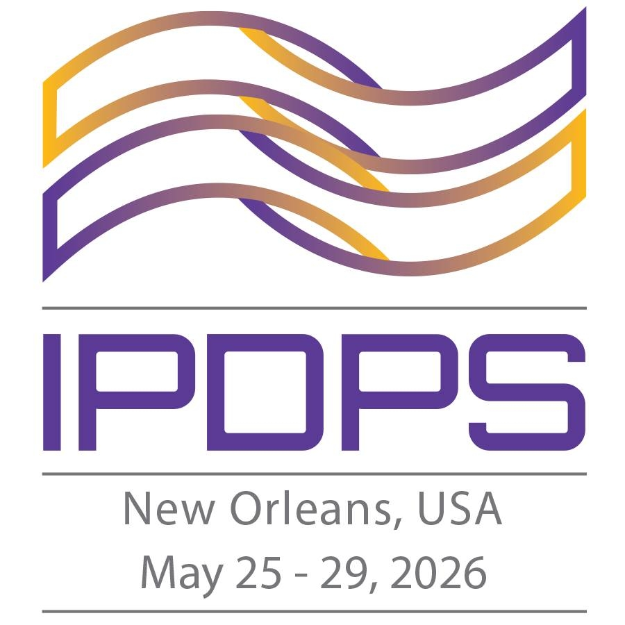

|
 |
The Sixteenth International Workshop on
Accelerators and Hybrid Emerging Systems (AsHES) To be held in conjunction with 40th IEEE International Parallel and Distributed Processing Symposium New Orleans, USA May 25, 2026 |
|
Keynote
8:30
- Dr. William F. Godoy, Oak Ridge National Laboratory
- Title: Practical, portable, and productive programming systems for heterogeneous HPC
- Abstract: The rising complexity of exascale and future heterogeneous systems has posed interesting challenges for the programmability, productivity, and performance portability of high-performance computing (HPC) and AI applications. In this talk I present our US Department of Energy (DOE) funded research efforts at Oak Ridge National Laboratory on: i) high-productivity programming for HPC using the Julia and Mojo languages, and ii) leveraging state-of-the-art AI large language models (LLMs) for HPC programming. Modern languages like Julia and Mojo attempt to solve the two-language problem that separates development efforts between domain-scientist and software development teams. First, we showcase our research efforts running Julia on the Frontier leadership computing system and the development of our flagship performance portable JACC.jl framework and its user community that push the envelope on portable programming for future heterogeneous CPU+multi-GPU nodes leveraging Julia’s LLVM-powered unique capabilities for productive scientific computing. We then discuss the very first study on the novel, and yet stable, industry-funded and MLIR-powered Mojo language targeting the Python ecosystem for portable-GPU science kernels. Second, we highlight our research efforts on how LLMs can learn HPC code patterns at a low-cost exemplified in our pioneer work on the evaluation of LLMs for HPC code generation followed by our recent ChatBLAS ChatHPC, ChatMPI, Fortran to C++ translation, multimodality, and agentic AI exploration efforts that is preparing us for the DOE’s Genesis mission. Hence, we continue to advance the programming systems ecosystem for the next-generation of supercomputing dominated by heterogeneous architectures in the era of AI.
- Bio: William F. Godoy is a Senior Computer Scientist at Oak Ridge National Laboratory. His research interests are in HPC, programming systems, workflows, AI for HPC, and energy efficiency. He has worked extensively in DOE projects focusing on HPC libraries (e.g. ADIOS2), applications (QMCPACK), and programming systems. His recent work introduced the use of LLMs for HPC and the application of high-productivity languages for performance portable HPC: Julia and Mojo. He received his PhD in mechanical engineering from the State University of New York at Buffalo in 2009. He is a senior member of IEEE, a member of ACM serving in HPC venues and has co-authored more than 60 publications in the field of computer and computational science including several technical awards.
Communications, Collectives, and Telemetry
9:30
-
Paper Type: Long
103
Optimizing Allreduce Operations for Modern Heterogeneous Architectures with Multiple Processes per GPU
Break
10:00
GPUs, Accelerators, and Runtime/Programming Models
10:30
-
Paper Type: Long
110
Exploring C++ Standard Parallelism for GPU Programming in a Particle-In-Cell Application -
11:00
Paper Type: Long
109
A Statically Scheduled Vector Accelerator with Explicit Data Movement Control -
11:30
Paper Type: Long
106
Quantitative Characterization of Host-Initiated CUDA Memory Allocators: Performance, Fragmentation, and Concurrency Trade-offs
Lunch Break
12:00
Systems, Memory, and Runtime Adaptation
1:30
-
Paper Type: Short
107
Adapting Workloads for CXL-Based Disaggregated-Memory Systems -
1:50
Paper Type: Long
108
Towards an Adaptive Runtime System for Cloud-Native HPC -
2:20
Paper Type: Short
104
Incidence Constraints in Hypergraph Partitioning on GPU -
2:40
Paper Type: Long
102
Energy–Performance Trade-offs in Federated Learning with SmartNIC-Enabled Communication on HPC Systems
Break
3:10
Scientific AI, Energy/Performance, and Partitioning
3:30
-
Paper Type: Long
105
A Benchmark Suite for Evaluating Scientific AI Workloads on GPUs -
4:00
Paper Type: Long
111
ET: Bridging the Gap on Energy Telemetry for Multi-GPU Communication Collectives